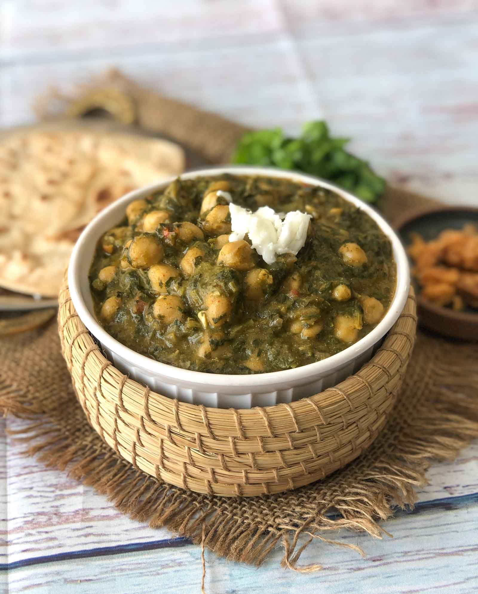
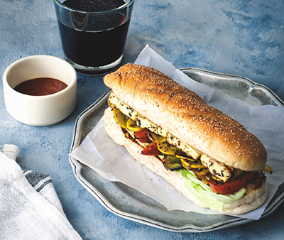

Sarson chana tip-top
Ingredients
For the Chole:1/2 cup Kabuli Chana (White Chickpeas) , soaked over night
1/4 cup Maize flour (Corn Meal)
For the saag:
2 Green Chillies , finely chopped
4 cloves Garlic , finely chopped
Salt , to taste
150 grams Spinach Leaves (Palak) , washed and finely chopped
50 grams Bathua leaves , washed and finely chopped
300 grams Mustard greens , washed and finely chopped
For the tadka:
2 tablespoons Ghee
1 inch Ginger , finely chopped
4 cloves Garlic , finely chopped
2 Onions , finely chopped
2 Tomatoes , finely chopped
1 teaspoon Red chilli powder
Salt , to taste
1 teaspoon Cumin (Jeera) powder
1 teaspoon Coriander (Dhania) Powder
1 teaspoon Garam masala powder
1/3 teaspoon Turmeric powder (Haldi)
How to make Sarson chana tip-top
1.To begin making the Sarson Chana tip-top firstly wash and soak the chana overnight.2.To cook the Chole for the Sarson Chana
Next morning, transfer the chole along with the water into a pressure cooker with some salt, close the pressure cooker.
3.Pressure cook for 6-8 whistles and turn off the flame. Allow the pressure to release naturally before you open the pressure cooker.
How To Cook Legumes in Pressure Cooker
1.Drain the excess water from the chana and set aside.2.To cook the Saag for the Sarson Chana
In a pressure cooker, add the finely chopped sarson leaves, palak leaves and bathua leaves, along with 1/4 cup of water, salt, green chillies and garlic.
3.Close and pressure cook for about 3 whistles and turn off the flame.
4.Once the pressure releases naturally, open the lid and sprinkle the corn meal over it, using a potato masher, mash the saag well.
To make the Tadka for the Sarson Chana
1.Heat a kadai with ghee on medium flame, to this add the finely chopped ginger and garlic and saute for about a minute.2.To this add the finely chopped onions, and cook until it turns into a deep brown colour.
3.Once the onions are brown, add in the chopped tomatoes and cook until they turn mushy.
4.Mash the onion- tomato mixture with the back of the ladle.
5.At this stage, add all the dry masalas - salt, red chilli, turmeric powder, cumin powder, garam masala, and coriander powder.
6.Mix well and add the pre cooked greens, and chole and simmer for a few minutes until the Sarson Chana comes to a boil.
7.Transfer the Sarson Chana to a serving bowl and serve with a dollop of white butter.
8.Serve Sarson Chana Recipe along with Makki Ki Roti Recipe - A Classic North Indian Corn Roti, Gajar Shalgam Ka Paani Wala Achar Recipe - Carrot And Turnip Pickle, White Butter and Jaggery by the side to complete winter dinner.

Grilled Sandwich With Paneer & Roasted Vegetables
Ingredients
2 Baguette150 grams Paneer (Homemade Cottage Cheese) , cut in 1 inch size thickness
1 Red Bell pepper (Capsicum) , thinly sliced
1 Yellow Zucchini , thinly sliced
2 cloves Garlic , grated
1 teaspoon Red Chilli flakes
1/2 teaspoon Dried oregano
1/2 teaspoon Dried Thyme Leaves
1/2 teaspoon Rosemary , dried
Lemon juice , of 1 lemon
1 tablespoon Olive Oil
Salt and Pepper , to taste
Mustard sauce , as required
3/4 cup Iceberg lettuce , roughly torn
1 teaspoon Butter
2 Cheese , slices
How to make Grilled Sandwich With Paneer & Roasted Vegetables
1.To begin making the Grilled Sandwich With Paneer & Roasted Vegetables, first let’s make the marinade.2.In a clean large mixing bowl, add finely chopped garlic, dried oregano, dried thyme, dried rosemary, red chilli flakes, lemon juice, 1 tablespoon olive oil, salt and pepper. Mix them all well.
3.Next we will roast the vegetables. Heat a teaspoon of oil in a heavy bottomed pan or a wok, add the sliced vegetable, sprinkle some salt and roast them until lightly softened. Turn off the heat.
4.Add paneer slices and roasted veggies to the marinade and gently toss them well, cover and keep it aside for 5 minutes.
5.Next, heat and grease the grill pan (if using cast iron grill pan, brush it with little olive oil).
6.Place the marinated paneer slices on the grill pan and grill it on high heat for 2 minutes on each side. Take out the grilled paneer from the pan and keep it aside in a bowl.
7.The next step is to assemble the Sandwich with Paneer & Roasted Vegetables.
8.Next, slice the submarine bread horizontally. Apply butter on both the halves of the bread. Toast both the halves of the bread on same grill pan until slightly golden brown and crisp. Once the bread is toasted, remove from the heat.
9.Place the toasted bread on a flat surface. Place a cheese slice on lower half of the bread and make an even layer of iceberg lettuce. Place the grilled vegetables and the grilled paneer pieces on the top.
10.Top it with dollops of mustard sauce and the remaining marinade from the bowl. Cover the sandwich with the other half of the bread and serve.